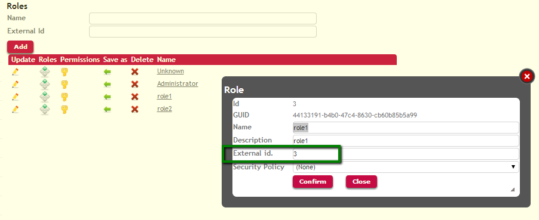
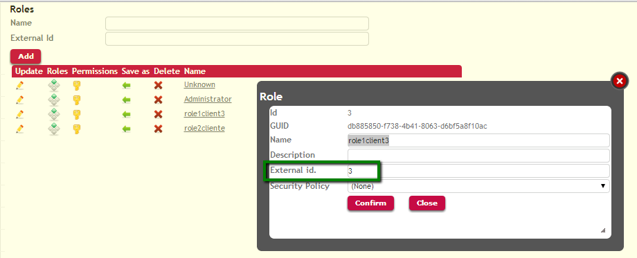
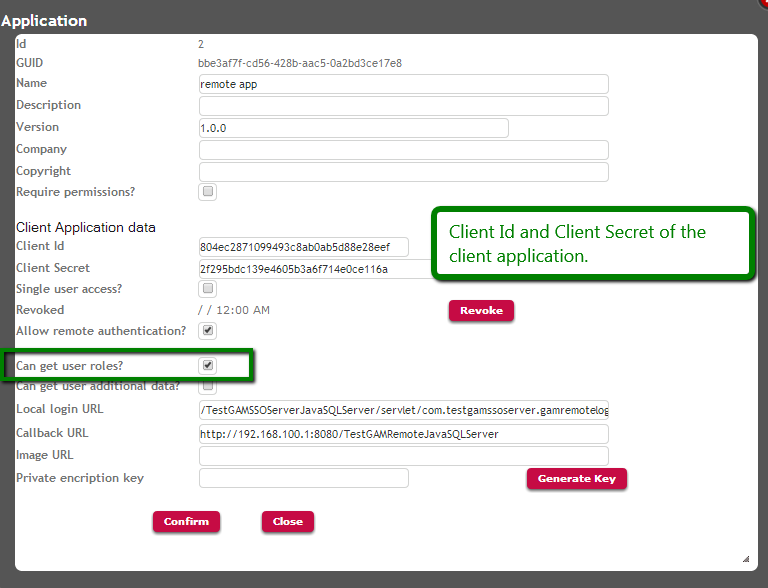
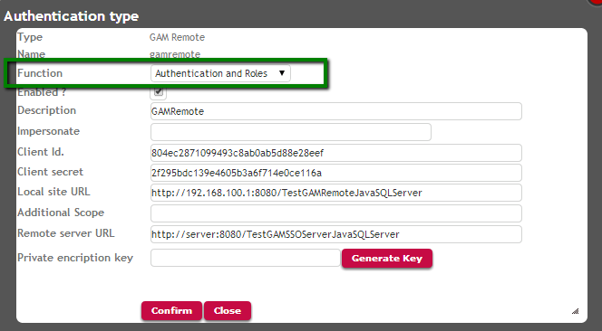

Applications using GeneXus Access Manager can implement SSO.
In the GeneXus SSO solution, all the web applications involved have to be connected to a GAM database. Only one of those applications is the Identity Provider (or the server application), and the rest are referenced as client applications. See Single Sign On in applications using GAM for details about this topic.
What SSO provides is a solution to the problem of providing centralized authentication for different distributed web applications. As for the authorization, it's always centralized in the client applications.
As mentioned before, the client applications are in charge of the authorization, which means that the GAM Roles and GAM Permissions have to be defined in the GAM of the client application.
However, when the user authenticates in the Identity Provider, the information on roles which resides in the GAM of the Identity Provider can be transferred to the GAM of the client application.
The mechanism is as follows:
- When the user authenticates, the list of roles can be transferred from the server to the client application. In order to be assigned to the user, those roles have to be mapped in the GAM of the client application.
The roles need to be mapped using their External ID property. That is, the External ID of the roles in the server have to be the same as the External ID of the role in the client in order to be considered the same role.

Picture#1. Roles in the server

Picture#2.Roles in the client
- The roles should have the same hierarchy in the server and in the client.
However, as explained before the authorization is centralized in the client application, so what really matters is the definition and the hierarchy of the roles in the client. In addition, the permissions are centralized in the client application.
In the Identity Provider's GAM, all the client applications need to be registered with their corresponding Client ID and Client Secret, whereas in the client applications the GAM Remote Authentication Type needs to be defined.
1. When running the GAM Web Backoffice in the server application, it is necessary to check the "Get User roles" option for the client application registered:

Picture#3.Server configuration for SSO : get user roles. Running GAMExampleEntryApplication webpanel.
Note that the ClientAllowGetUserRoles method of the GAMApplication object - which belongs to the GAM API - is the method used in the code of this webpanel (GAMExampleEntryApplication). The GAMExampleEntryApplication object is part of the GAM Examples.
&Application.ClientAllowGetUserRoles = &ClientAllowGetUserRoles //&Application is GAMApplication data type.
2. When running the GAM Web Backoffice in the client application, it is necessary to specify in the definition of the GAM Remote authentication type that it is going to manage "Authentication and Roles".

Picture#4.Client configuration for SSO : get user roles. Running GAMExampleEntryAuthenticationType webpanel.
When using the GAM API, the code would be:
&AuthenticationTypeGAMRemote.FunctionId = &FunctionId.ToString() //&AuthenticationTypeGAMRemote is GAMAuthenticationTypeGAMRemote data type. &FunctionId is based on GAMAuthenticationFunctions domain.
After this configuration is made, when the user authenticates using the configured Remote Authentication, he is updated in the client application with the roles he has on the Identity Provider.
Remember that only the roles which are related by their External ID are going to be assigned to the user.
|